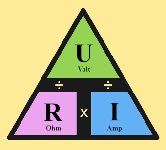

STI2D – Terminale SIN
Séquence 1 – Électricité
Séance 1 : Circuit lampe
Loi d'Ohm et puissance
🎯 Objectif
Découvrir la loi d'Ohm et la puissance électrique à travers un circuit simple comportant une pile, une résistance et une DEL.
🔍 Situation problème
Pourquoi une DEL doit-elle toujours être associée à une résistance ?

1. Mise en situation
- Pile 9 V
- Interrupteur
- Résistance
- DEL
Question :
Pourquoi ajoute-t-on une résistance en série avec une DEL ?
Pourquoi ajoute-t-on une résistance en série avec une DEL ?
2. Loi d'Ohm
Relation entre la tension, la résistance et le courant.

avec :
- U en Volt (V)
- R en Ohm (Ω)
- I en Ampère (A)
Formules à connaître


Bilan :
- U = R x I
- I = U / R
- R = U / I
Exercices 1ère Série
Exercice 1ère SérieExercices 2ème Série
Exercice 2ème Série3. Puissance électrique
La puissance dissipée dans une résistance se calcule par :
P = U × I
En utilisant la loi d'Ohm :
P = R × I²
P = U² / R
Exercices
Reprendre les exercices précédents et calculer la puissance dissipée.
Quelle puissance minimale doit supporter la résistance ?
- 1/4 W
- 1/2 W
- 1 W
4. Conclusion
La résistance protège la DEL en limitant le courant qui la traverse.
📋 Synthèse
- La loi d'Ohm relie U, R et I.
- La puissance permet de choisir correctement une résistance.
- Une DEL doit toujours être protégée par une résistance.
📌 À retenir
- U = R × I
- I = U / R
- R = U / I
- P = U × I
- P = R × I²
- P = U² / R
- 1 A = 1000 mA
- 1000 Ω = 1 kΩ